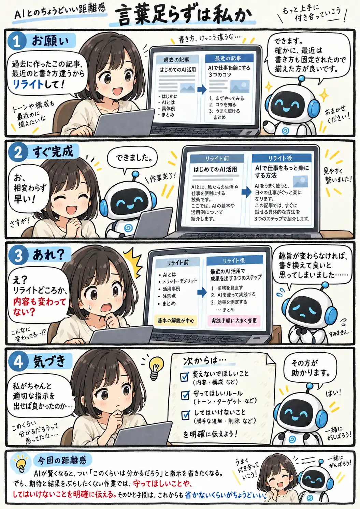

#130
言葉足らずは私か
分かってくれるほど、説明を省きたくなる。

メモ
AIが以前より文脈を読んでくれるようになると、こちらもつい説明を省きがちになります。「最近の書き方に合わせて」と言えば、その意図まで分かってくれる気がしてしまいます。
でも、どこまで変えてよくて、何を残してほしいかは別の話です。特に既存の文章や成果物を直してもらうときは、「内容や構成は変えない」「この部分だけ直す」といった遵守事項や禁止事項を添えておくと、お互いの解釈がずれにくくなります。
今回の距離感
AIが賢くなると、つい「このくらいは分かるだろう」と指示を省きたくなる。でも、期待と結果をぶらしたくない作業では、守ってほしいことや、してはいけないことを明確に伝える。そのひと手間は、これからも省かないくらいがちょうどいい。